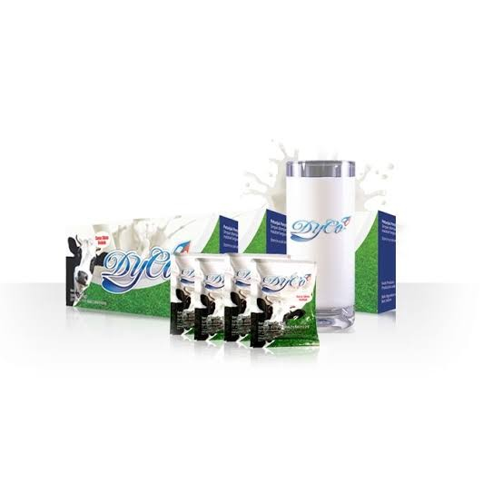

APA ITU SUSU DYCO COLOSTRUM
Susu Kolostrum Dyco atau jolong adalah susu yang dihasilkan oleh kelenjar susu dalam tahap akhir kehamilan dan beberapa hari setelah kelahiran bayi. Susu kolostrum manusia dan sapi warnanya kekuningan dan kental. Susu kolostrum penting bagi bayi mamalia (termasuk manusia) karena mengandung banyak gizi dan zat-zat pertahanan tubuh. Susu kolostrum (IgG) mengandung banyak karbohidrat, protein, dan antibodi, dan sedikit lemak (yang sulit dicerna bayi). Bayi memiliki sistem pencernaan kecil, dan susu kolostrum memberinya gizi dalam konsentrasi tinggi. Susu kolostrum juga mengandung zat yang mempermudah bayi buang air besar pertama kali, yang disebut meconium. Hal ini membersihkannya dari bilirubin, yaitu sel darah merah yang mati yang diproduksi ketika kelahiran.
APAKAH KAMU MENGALAMI INI ?
SUSU DYCO COLOSTRUM SOLUSINYA!

- MENGATASI PERADANGAN PADA USUS BESAR
- MENGATASI SAKIT PERUT DISERTAI DIARE
- MENGATASI INFEKASI SALURAN PERNAPASAN ATAS (ISPA)
- MENGATASI DAYA TAHAN TUBUH LEMAH
- MENGATASI SARAF KEJEPIT
Manfaat lain Susu Dyco Colostrum
- SUSU KOLOSTRUM MENINGKATKAN RASA BUGAR SECARA KESELURUHAN
- MENGURANGI LEMAK TUBUH TANPA DIET
- MENGUATKAN TONUS DAN TEKSTUR KULIT
- MENINGKATKAN DAYA INGAT
- MENGHILANGKAN KERUTAN
- MENINGKATKAN PERTUMBUHAN RAMBUT PADA PRIA
- MENINGKATKAN ENERGI
- MENINGKATKAN KEKUATAN DAN JUMLAH OTOT
- MENINGKATKAN SUASANA HATI (MOOD)
- MENINGKATKAN FLEKSIBILITAS PUNGGUNG
- MENINGKATKAN TOLERANSI DAN KETAHANAN LATIHAN
- KAPASITAS PEMULIHAN LUKA LEBIH CEPAT
- SUSU KOLOSTRUM MEMPERBAIKI FUNGSI IMUN SEHINGGA DAPAT MENINGKATKAN PERLINDUNGAN TERHADAP PENYAKIT.
Kolostrum sapi dikenal sebagai sumber nutrisi yang sangat baik. Kandungan antibodi di dalamnya dapat membantu melindungi tubuh dari berbagai penyakit, sementara kandungan pertumbuhannya dapat mendukung pertumbuhan dan perkembangan yang sehat.
|Kemasan Terbaru |
Exp Selalu Terbaru|
|100% Produk Original|

SUSU COLOSTRUM DYCO BERFUNGSI UNTUK :
- Menjaga Kesehatan dan meningkatkan Stamina Pria
- Untuk wanita dapat mengurangi rasa sakit saat Menstruasi dan mengurangi bau
- Membantu kesembuhan penyakit Prostat
- membantu kesembuhan penyakit diabetes
- membantu melancarkan peredaran darah
- meningkatkan daya tahan Tubuh
- meningkatkan keinginan untuk melakukan hubungan suami-istri
- mengembalikan testosteron secara alami tanpa efek samping
- Membantu meningkatkan Libido dan kemampuan vitalitas
- Membantu mendongkrak kejantanan dan ketahanan pria serta meningkatkan kualitas sperma.
- Menjadikan tubuh lebih bergairah
- Peredaran darah menjadi lebih lancar.
- Vitalitas lebih terjaga (suami- istri).
Kemasan tersedia: 1 box isi 30 sachet
BPOM RI MD 802928259052